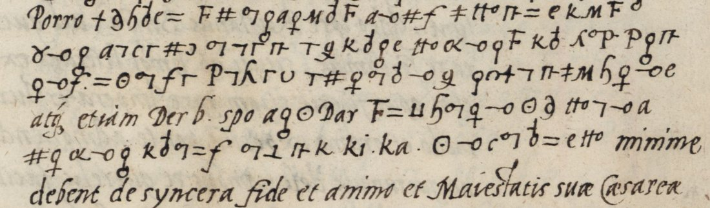

At a glanceKnown key applied · complete · 509 of 514 cipher words (99.0%)
- The letter
- Ferdinand I, at Augsburg, to Giovanni Maria (Johann) Malvezzi, his resident envoy at the Porte, 23 January 1548, answering four of Malvezzi’s letters. Eight pages of Latin, mostly clear, with five ciphered runs on pages 1 and 4–7.
- Where
- Budapest, Hadtörténelmi Levéltár (Military History Archive), 1548/3; DECODE R366, “partially decrypted”.
- The cipher
- One letter to one or more graphic signs (planetary and alchemical signs, Greek and re-valued Latin letters), numbers for doubled letters, a short syllable nomenclator for the principals, and whole Latin words as nulls.
- How it was deciphered
- The key is on DECODE at the same shelfmark (R367, with a second copy R386). The ciphered runs were transcribed sign by sign and, on 5 October 2026, every open stretch re-read from the full-resolution images, adding five variant sign forms of this hand.
- What it says
- The French are working to break the Habsburg–Ottoman peace because they dare not attack Charles V with their own forces; the envoy’s 4,300 ducats come out with the secretary Justus de Argento, with a 3,000-ducat credit from a banker; what to answer Rüstem Pasha about troops on the border; and the captives.
- Measured
- 509 of 514 plaintext words of the cipher read as Latin sense (99.0%); 500 (97.3%) without the nine words where the writer’s slip is corrected. Letters shuffled inside each word score 3.7%.
- Still open
- The banker’s surname after Gulielmo (the signs give Semaslia), a two-sign group before nominatione, and two lone v signs, probably the clerk’s uel.
01 The letter and the key
R366 is Ferdinand’s own letter, eight pages, opening Egregie fidelis dilecte. Accepimus quaternas literas tuas and closing Datum in nostra et Imperii Ciuitate Augusta Die XXIIJ Mensis Januarij Anno Domini MDXLVIIJ, signed Ferdinand with the countersignature and the address to Joanni Marie Malvetio in Constantinopoli. The ciphered runs fall on pages 1, 4, 5, 6 and 7, always in the middle of a clear sentence, so the Latin of the cleartext is a continuous check on the decryption.
The key did not have to be reconstructed. Searching the DECODE records around R366 turned up three siblings at or near the same shelfmark: R367, “Rex Ferdinandus I. ad Malvezium, a° 1548” (Military History Archive 1548/3, 1), four pages giving Tabella I and Tabella II: the letter alphabet with its homophones, the numbers for doubled letters, and two lists of code syllables; R386 (National Széchényi Library, Quart. Lat. 2254. 15), a sheet headed Chiffre Johann Malvezzi’s carrying the same alphabet with the nulls written out; and R368, a short further ciphered slip at the same shelfmark, marked ad 2, which is not a decipherment of this letter. R367 and R386 are later archival reconstructions of the table; they fit the letter exactly.
02 The system
A monoalphabetic cipher with homophones, written in graphic signs: alchemical and planetary signs (♀, ♁, ⊙, ☉), Greek letters (λ, π, α, Π), and Latin letters used with other values: a is s, c is b, e is r, f is m, k is e, M is a, P is n, T is p, v is f. Two or three signs serve each common letter. Doubled letters are numbers: 3 = cc, 4 = dd, 5 = ff, 6 = gg, 7 = ll, 8 = mm, 12 = tt, 13 = ss, 14 = rr, 15 = pp, 16 = nn, with 50 = bellum and 51 = pax.
The nulls include whole Latin-looking words dropped into the cipher (etiam, idcirco, atque, cum, Porro, Dar, Der, Dec, spo, spu) and loose letters (b, d, n, z, π). A ciphered passage therefore seems to have Latin words scattered through it, and those are the parts that mean nothing. The same words also occur as genuine words elsewhere in the cipher, spelt out in signs.
A short nomenclator of syllables covers the principals: ki = Rustanus (Rüstem Pasha), ka/ke = Passa, le = the Emperor Charles V, Bi = the king of France, Ab = the French, Nas/Ras/ye = the Sultan, Nis = Junus Bey, Sis = Ibrahim Pasha, Ros = the Persians, Vb = the king of Poland, zes = Queen Isabella, zis = John Sigismund, zos = Frater George (Martinuzzi), zi = Hungary, Cad = Constantinople, Eb = the envoy, Mis = Justus de Argento.
The practical difficulty is the hand. One family of signs (a small circle on a stem, alone, with a second circle, or with a cross) does duty for u, for e/ae, and for t, and the strokes that separate them are often lost. Every such sign has to be settled from the Latin, which is why the decryption below is continuous in some places and broken in others.
03 The French at the Porte
The longest political passage is on page 4, running out of a clear sentence about the peace and back into one. In cipher:
… Galli tam multipliciter et dolose hanc pacem subuertere conantibus, qui sane id non ob aliam causam faciunt quam ut, ex quo Rex Galliae et sui similes sacram Caesaream et catholicam regiam maiestatem, fratrem et dominum nostrum charissimum, uiribus suis lacessere non audent, imperatoris Turcorum sumptibus sese contra maiestatem suam Caesaream, quae sibi ab illis praeter aequum et honestum adimi nihil patitur, ulciscantur. Sed magnitudo eius atque etiam ipse Rustanus Passa dubitare — [clear:] minime debent de syncera fide et animo et Maiestatis suae Caesareae et nostro erga hanc pacem.
In English. The French are working in many ways, and deceitfully, to overturn this peace; and they do it for no other reason than this: since the king of France and his like dare not attack the Emperor, Ferdinand’s dearest brother, with their own forces, they want it done at the Sultan’s charges. But the Sultan and Rüstem Pasha themselves must not doubt the sincerity of the Emperor’s good faith, and of Ferdinand’s, towards this peace.

This is why the passage is in cipher. The cleartext on either side is the ordinary matter of the truce of 1547: raids across the Hungarian border, robbers who have lived by plunder through long years of war, complaints carried to Rüstem Pasha. The accusation against the French envoy’s party at Istanbul, and the admission of how much the Habsburgs need the Sultan to believe them, are the parts the courier must not be able to read.
04 The envoy’s money
The second half of the cipher, from the foot of page 4 through pages 5 and 6, is Malvezzi’s pay and how it will reach Constantinople. It is the most continuous stretch in the letter.
Quo uero ad intertentionem, tibi per proximas literas nostras significauimus nos decreuisse ut tibi pro tua ordinaria intertentione et pro reliquis extraordinariis sumptibus, quos pauci momenti esse posse nobis ostensum est, mille quingenti ducati annuatim numerentur, exceptis sumptibus qui in mittendis tabellariis propriis faciendi erunt, de quibus tibi solutionem seorsim curaturi sumus. Mandabimusque Justo de Argento, secretario nostro, qui cum pecuniis propediem se in uiam dabit, ut a te computum de receptis et expositis accipiat. Per eundem quoque Justum tibi summam illam duorum millium et octingentorum ducatorum, quos te isthic non solum pro tuo intertenendo et sustento, sed in aliis etiam negotiis nostris expositos debere nobis scripsisti, necnon mille et quingentos ducatos pro tua intertentione ad futurum unum annum, a prima die mensis Martii nunc uenturi computandum, transmittemus: ita quod ab ipso Justo summam quattuor millium et trecentorum ducatorum simul accipies. Praeterea scribimus Gulielmo S[…], sicuti et Argento, litterarum huiusmodi exemplo uidebis, ut in casu aliquo ingruentis necessitatis (de qua nos tam tempestiue admonere non ualeres) tibi ad requisitionem tuam, in una uel pluribus uicibus, usque ad tria milia ducatorum nomine nostro, mediante aliquo honesto et conuenienti interesse, de quanto tu et Justus cum eo conuenire debebitis, mutuo dare non recuset, et securus esse debeat se, ad exhibitionem chirographi tui et nominatione nostra, solutione Venetiis, indubitanter habiturum et accept[at]urum esse. Volumus autem et requirimus, pro tua erga nos fide, et eam pecuniam, sicuti te hactenus omnino fecisse et posthac facturum esse non ambigimus, non nisi in necessariis usus … exponas atque impendas. Magistrum horologiorum inueniendum curabimus, ita ut secretarius noster cum pecuniis isthuc uenturus eum secum adducat.
In English. As to his upkeep: the last letter said 1,500 ducats a year, covering his ordinary maintenance and the lesser extraordinary expenses, other charges excepted. Couriers he must send express will be paid for separately. Ferdinand’s secretary Justus de Argento is setting out shortly with money and will take from Malvezzi an account of what he has received and spent. By him Ferdinand sends the 2,800 ducats Malvezzi wrote that he had laid out there, not only on his own keep but on other business of the King’s, and 1,500 ducats for the coming year reckoned from 1 March next: 4,300 ducats to be received at once. Beyond that, Ferdinand is writing to a banker, Gulielmo S[…], with copies to Malvezzi and to Argento, to lend him on request, in one or more instalments, up to 3,000 ducats in the King’s name should a sudden need arise of which the court cannot be warned in time, at an honest and reasonable rate of interest to be agreed between Malvezzi, Justus and the lender, the lender to be secure of repayment at Venice against Malvezzi’s signed note in the King’s name. Ferdinand trusts his fidelity and charges him to spend it only on real need. An agent is to be found and brought out by the secretary with the money.
05 The other passages
Page 1, decrypted in part. It follows the clear sentence saying that some of Malvezzi’s reports were written to Ferdinand’s secretaries, and turns on what was said in conversation with Rüstem Pasha: sermone … [ki ke = Rustanus Passa] … tecum habitos … odium propter tractatum nobiscum … pacis constituendae autor, nunc uero conseruandae promotor [et] defensor sibi conciliarit … praeterea quid … responderis — running back into the clear et quid pro eiusdem pacis conseruatione faciendum censeas. Rüstem is the man who made the peace and now protects it, and who has drawn hostility on himself for dealing with the Habsburgs; Ferdinand wants to know what Malvezzi answered him.
On 5 October 2026 every stretch the first pass had left open was re-read from the full-resolution images: the first ten cipher lines of page 1, the foot of page 6 and all of page 7. They are now deciphered straight through.
Page 1 in full: sermones [Rustani Passae] tecum habitos, quod uidelicet ingens odium propter tractatum nobiscum initae pacis, tanquam illius pacis constituendae autor, nunc uero conseruandae promotor et defensor, sibi conciliarit, et praeterea quid tu ad quaeuis eiusdem [Rustani Passae] obiecta, quaesita et interrogata responderis.
Page 6, foot: the money is to be spent only on real need; a clockmaster is to be found and brought out by the secretary; and if Rüstem asks about Ferdinand’s troops on the border, Malvezzi is to say: nos in eisdem confiniis non alias gentes quam quae sunt necessariae pro eorundem tuitione tum ad coercendos [v] compescendos latrones et uiolatores pacis, tum etiam ad conseruandam et manutenendam obedientiam a subditis nostris nobis debitam [v] non aliam ob causam (only the troops needed to defend the border, to restrain robbers and breakers of the peace, and to keep the obedience owed by his subjects).
Page 7, the captives: de captiuis quos iussu [Imperatoris Turcorum] liberatos esse scribis, si necesse fuerit respondebis nobis id auditu gratissimum fuisse, nos uelle etiam uicissim libenter curare ut sicubi magnitudinis suae subditos captos fuisse intellexerimus et de quo apud nos conquestum fuerit, eos liberari et dimitti faciamus, atque adeo nihil omittamus quod ad mutuam seruandae pacis sinceritatem pertinet — before the clear close, Et haec sunt quae in praesentiarum ad literas tuas respondenda duximus. Ferdinand will free the Sultan’s subjects held on his side in return.
06 What remains
- Measured.
measure_sense.pycounts a plaintext word as read only when every sign matches the key and the word is a Latin form whose nine-word window scores as Latin under the sharedlamodel: page 1 41/41, page 4 114/114, page 5 156/158, page 6 134/136, page 7 64/65, 509/514 (99.0%). The 21 September figure of 83% was a count of marks over the first pass, which had left out page 1 lines 1–8. - Open. The banker’s surname after Gulielmo on page 5 (every sign reads, giving Semaslia, but the man is not identified); a two-sign group before nominatione on page 6 that fits no key value as written; and a lone v sign twice (coercendos v compescendos, debitam v non aliam), which is f in the key and probably the clerk’s mark for uel, not counted as read.
- Grades. The continuous passages are H (certain): they run as Latin joining onto the clear text on both sides; the sums (2,800, 1,500, 4,300, 3,000 ducats) are spelt out in words and agree. C (probable): nine words where the context forces a writer’s slip to be corrected (pacr for pacis, Turcrum, uiciscantur for ulciscantur, ordinaria, comutum, factorum for facturum, expona, manutenea, faciam for faciamus).
- Not checked against the edition. Malvezzi’s correspondence of 1548–1552 is printed in Austro-Turcica 1541–1552 (Munich 1995), which is not freely available online and was not consulted. Since Ferdinand’s chancery kept its registry copies in clear, the content of this letter is probably in print there. This page adds a decipherment of this manuscript and the identification of its key among the DECODE records.
- Images. The archive’s images may not be published without its permission, so no facsimile is reproduced on this page.
07 Sources
- DECODE (de-crypt.org) record R366, MILITARIA_ARCH_1548_3, Budapest, Hadtörténelmi Levéltár 1548/3, eight pages, Latin, status “partially decrypted”. Images require a login and are not in the public domain.
- Keys: DECODE R367 (MILITARIA_ARCH_1548_3_1, four pages, Tabella I and II, transcription by NM, October 2020) and R386 (NSZL Quart. Lat. 2254. 15, Chiffre Johann Malvezzi’s). DECODE R368 (MILITARIA_ARCH_1548_3_ad2) is a further ciphered slip at the same shelfmark.
- Austro-Turcica 1541–1552. Diplomatische Akten des habsburgischen Gesandtschaftsverkehrs mit der Hohen Pforte im Zeitalter Süleymans des Prächtigen, ed. Srećko M. Džaja with Günter Weiß, prepared by Karl Nehring and Ernst D. Petritsch (Südosteuropäische Arbeiten 95, Munich 1995): the edition of Malvezzi’s correspondence.
- No decipherment of this manuscript was found on the web (searches, September 2026).
Notes, the key as used, and the line-by-line readings: targets/malvezzi1548/.